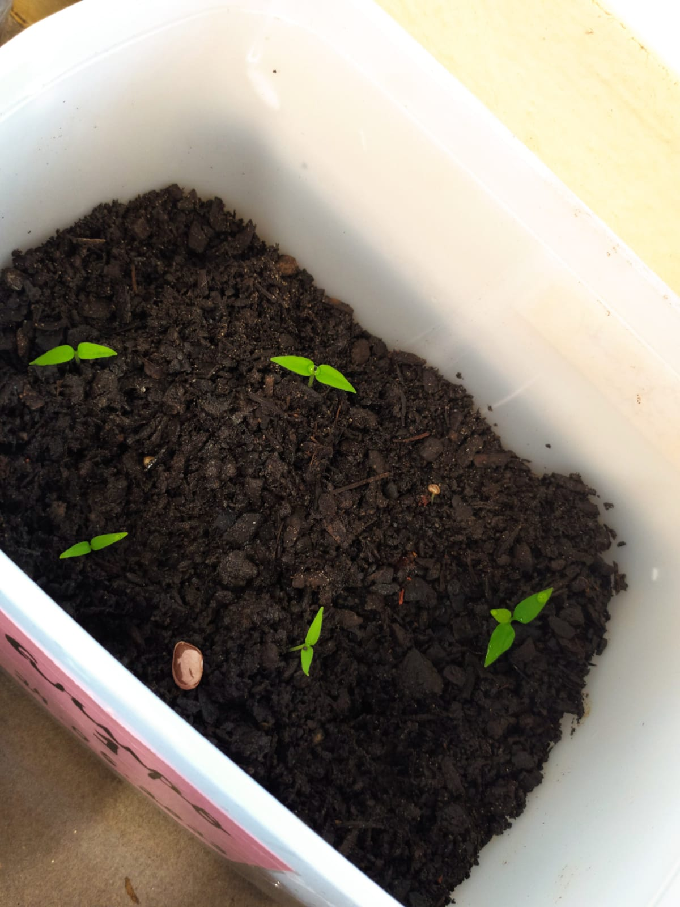

Pimenta Biquinho

A Pimenta Biquinho é facilmente identificada pelo seu formato único, e daí vem a origem do seu nome.Ela é pequena medindo cerca de 3cm de comprimento, tem formato arreonado e uma ponta em forma de bico.É uma pimenta muito bem aceita, não é ardente e ajuda dar frescor aos pratos.
Semana_01

No dia quinze de Maio de 2023, percebemos que nossa pimenta biquinho estava com pulgões, fizemos a retirada em um algodão molhado com água,vinagre e detergente. Fizemos análise de propagacão vegetativa, que dentre elas escolhemos Estaquia, por ser mais fácil e adequado ao nosso ambiente escolar.